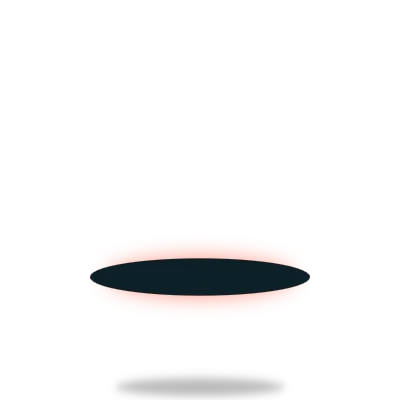
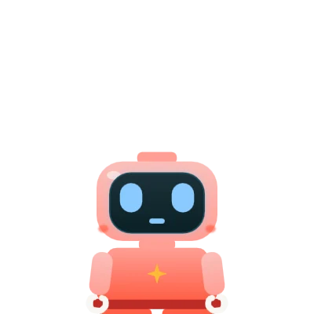
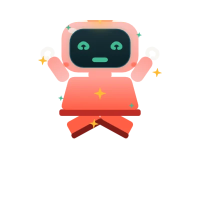

Your Genie,
ready.
Bottle puts a small floating Genie on your Mac. Hold a key and ask your company's data a question out loud. The answer comes from Databricks Genie, with sources you can check.
For macOS 14.4 or later on Apple Silicon. Needs a Databricks workspace with Genie and the Databricks CLI. Windows and Linux: work in progress.



The answers already live in Databricks. The questions come up everywhere else.
A number comes up in a meeting. A question lands in a chat. A doubt appears halfway through a document. Leaving to open a browser tab costs you the moment.
Bottle keeps the moment. It brings Databricks Genie to the app you are already in, asks it in every workspace you switch on, and hands back one answer you can verify.
Three keys. You always know what happens.
The key decides, so Bottle never guesses whether you meant to type or to ask.
-
Dictate anywhere
Hold Right Option and speak. Let go, and your words land at the cursor in a chat, a doc, a notebook or an email.
- Speech-to-text runs on your Mac (Parakeet)
- Cleanup removes filler words and keeps numbers exact
- Databricks transcription if you choose it
-
Ask Genie
Hold Right Option, tap G and ask out loud. Nothing is typed. Your question goes to Genie in each workspace you switched on.
- One workspace: the answer exactly as Genie gave it
- Several: one answer with 1 2 citations
- Open in Databricks on every answer
-
Record a call
Right Option + R records your mic and the other side of the call to your Unity Catalog volume, then writes a transcript and notes.
- Off until you turn it on in Settings
- Your volume, under your governance
- Transcript and notes through your Databricks AI Gateway
From your voice to a cited answer
Local where it can be. Governed where it must be.
On your Mac The mic, on-device speech-to-text by default, your tokens and your history stay in the Rust core.
In your Databricks The orchestrator, cleanup and call-recording models run on your Databricks AI Gateway. Genie answers under Unity Catalog permissions.
-
On your Mac
1
You speak
Hold Right Option, tap G. The Rust core owns the mic.
-
On your Mac
2
Speech becomes text
Parakeet runs on the device by default. Databricks transcription is optional.
-
In your Databricks
3
The orchestrator plans
A
system.aimodel on your Databricks AI Gateway, withstore: false. Its only tool: ask Genie. -
In your Databricks
4
Genie answers in each workspace
Genie One, with your own permissions, in the workspaces you switched on.
sales-emeasales-na -
On your Mac
5
One answer you can check
Citations, tables, Open in Databricks. Saved to encrypted local history.
Model not reachable? Bottle asks Genie on your home workspace directly and tells you so. Dictation keeps working offline.
Built for people who handle real data
The safeguards are in the architecture, not in a policy page. Bottle can only do what your Databricks sign-in already allows.
- Workspaces
- sales-emea, sales-na
- Combine across workspaces
- On
- Tool calls
ask_genie× 2- Model
system.ai, store: false- Withheld replies
- 0
Your sign-in stays yours
- Nothing new to log in to
- Tokens come from the official Databricks CLI (OAuth). They live in memory only and never reach the UI or the model.
- Citations you can trust
- Every link is checked against your own workspace hosts. Anything else shows as plain text.
- Small and native
- Tauri 2 with a Rust core. A light desktop app, not a browser tab.
The model is on a short leash
- One tool, no shell
- The model can call exactly one tool, ask Genie, through a Rust guard. No shell, no web access. Hard limits on steps, time and calls.
- Prompt-injection quarantine
- Genie replies are fenced before the model reads them. A reply that tries to steer the model is withheld and shown to you.
- Governed models only
-
Every model call goes through your Databricks AI Gateway to
system.aimodels, with nothing stored.
Your data stays in your house
- You decide what combines
- With Combine across workspaces off, one workspace's answer never reaches another's context. A receipt shows what was asked where.
- Private speech by default
- Dictation runs on the device. No audio leaves your Mac unless you choose.
- Encrypted local history
- Conversations live in SQLCipher, with the key in the macOS keychain. Wipe clears everything.
Bottle asks. Databricks Genie answers.
Bottle does not invent answers, copy your tables or run a server of its own. Every answer comes from Databricks Genie, in your workspaces, under your permissions. Bottle is the shortest path to it.
No new infrastructure, and no warehouse, job or cluster for Bottle to start.
- Bottle On your Mac: the keys, on-device dictation speech by default, the lamp, encrypted history.
- Databricks Genie Genie One through MCP answers in each workspace, from governed data.
-
Databricks AI Gateway
The orchestrator, cleanup and call-recording models, and optional Databricks
transcription:
system.ai, nothing stored. - Unity Catalog Governance for the data behind every answer, and your recordings volume.
Put Genie one keystroke away.
Needs a Databricks workspace with Genie and the Databricks CLI. Bottle can install the official CLI for you, after you agree.